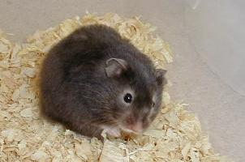
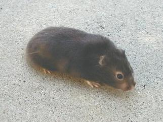
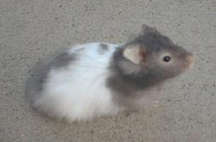
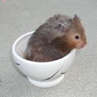
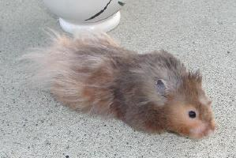

The show standard states that a sable should be a very dark charcoal color approaching black. Browning is penalized.
| Sable Syrian Hamsters | ||||||||||||||||||||||||
|  | ||||||||||||||||||||||||
|  | ||||||||||||||||||||||||
| Long Haired Sable Syrian Female | Long Haired Sable Syrian Female | |||||||||||||||||||||||
|  | ||||||||||||||||||||||||
| Long Haired Sable Banded Youngster | ||||||||||||||||||||||||
|  |  | |||||||||||||||||||||||
| This is a browning sable (thus not show standard but very common around here). His fur often has a mind of its own. He was a rescue in a pet store destined for the freezer. He came to me very gentle but very scared of people. We named him "Frosty." | ||||||||||||||||||||||||
| Sable is created when the Cream gene is combined with the Umbrous gene. Cream is recessive. Umbrous is dominant. It is impossible to distinguish whether a hamster has one or two Umbrous genes just from appearance. Sables can be either eeUu or eeUU. The show standard states that a sable should be a very dark charcoal color approaching black. Browning is penalized. |
||||||||||||||||||||||||